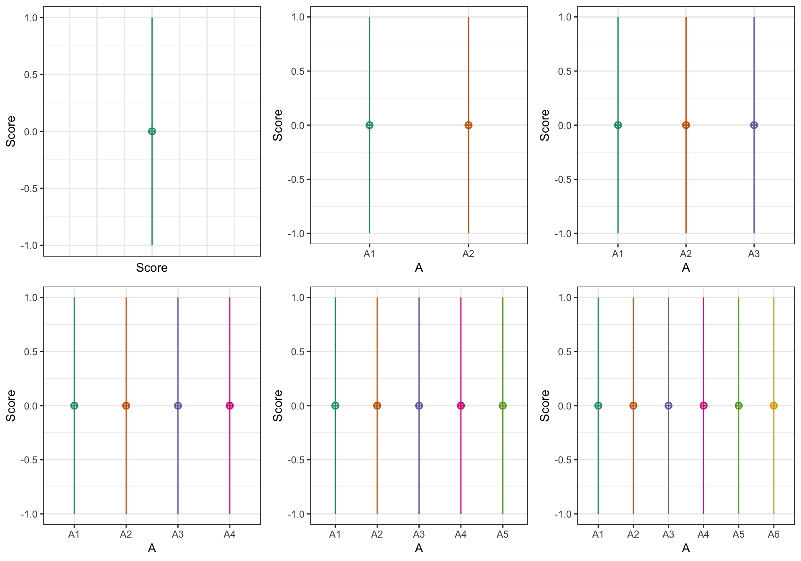
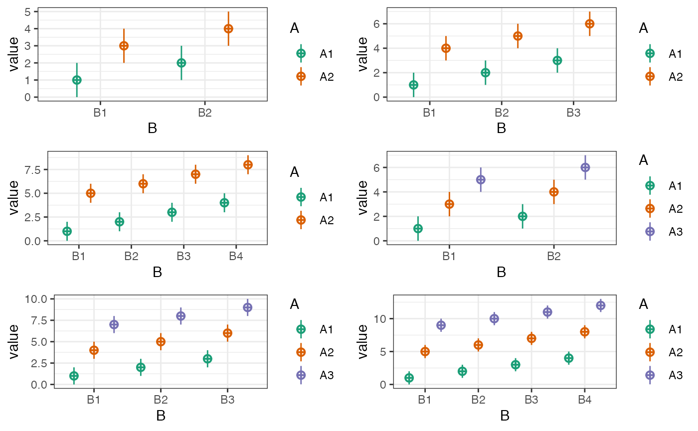
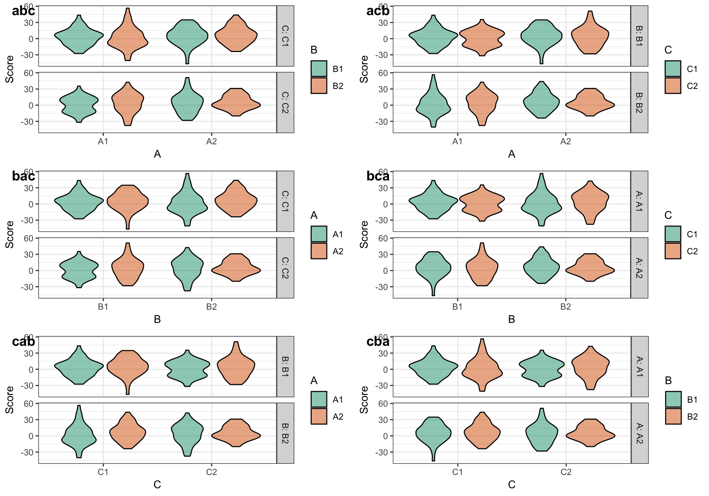
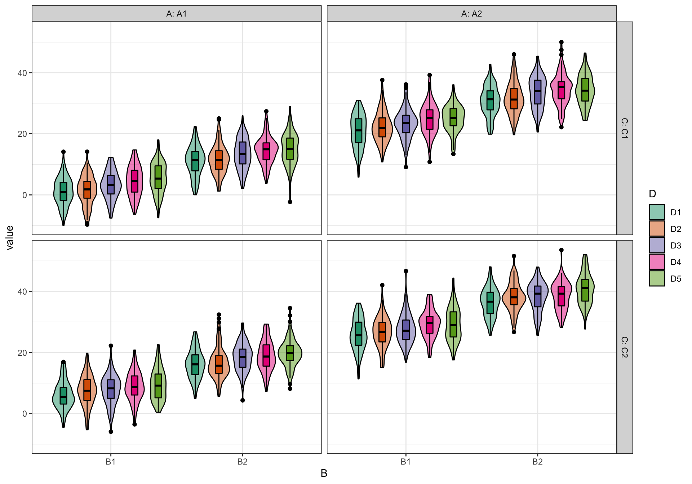

The functions check_design() and sim_design() will automatically create plots of your design (unless you set plot = FALSE) so you can check you set it up correctly. You can also use the plot_design() function to plot a saved design list.
p1 <- check_design(plot = FALSE) %>% plot_design()
p2 <- check_design(2, plot = FALSE) %>% plot_design()
p3 <- check_design(3, plot = FALSE) %>% plot_design()
p4 <- check_design(4, plot = FALSE) %>% plot_design()
p5 <- check_design(5, plot = FALSE) %>% plot_design()
p6 <- check_design(6, plot = FALSE) %>% plot_design()
cowplot::plot_grid(p1, p2, p3, p4, p5, p6, nrow = 2)
p1 <- check_design(c(2,2), mu = 1:4, plot = FALSE) %>% plot_design()
p2 <- check_design(c(2,3), mu = 1:6, plot = FALSE) %>% plot_design()
p3 <- check_design(c(2,4), mu = 1:8, plot = FALSE) %>% plot_design()
p4 <- check_design(c(3,2), mu = 1:6, plot = FALSE) %>% plot_design()
p5 <- check_design(c(3,3), mu = 1:9, plot = FALSE) %>% plot_design()
p6 <- check_design(c(3,4), mu = 1:12, plot = FALSE) %>% plot_design()
cowplot::plot_grid(p1, p2, p3, p4, p5, p6, nrow = 3)
You can plot data created with faux using plot_design(), too. It will return a ggplot with a violin-boxplot by default.
data <- sim_design(c(2,2,2), n = 50, mu = 1:8, sd = 16, plot = FALSE)
abc <- plot_design(data, "A", "B", "C", geoms = "violin")
acb <- plot_design(data, "A", "C", "B", geoms = "violin")
bac <- plot_design(data, "B", "A", "C", geoms = "violin")
bca <- plot_design(data, "B", "C", "A", geoms = "violin")
cab <- plot_design(data, "C", "A", "B", geoms = "violin")
cba <- plot_design(data, "C", "B", "A", geoms = "violin")
cowplot::plot_grid(abc, acb, bac, bca, cab, cba, nrow = 3,
labels = c("abc", "acb", "bac", "bca", "cab", "cba"))
